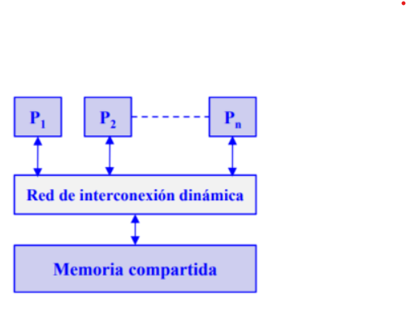
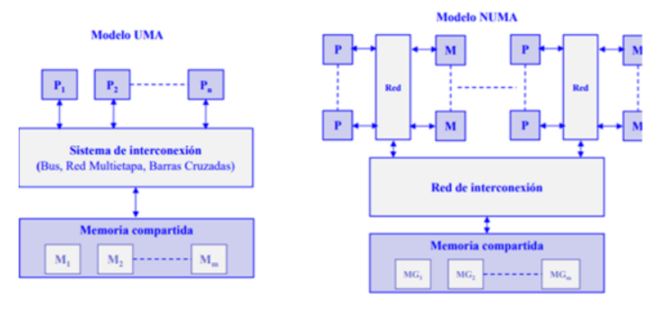
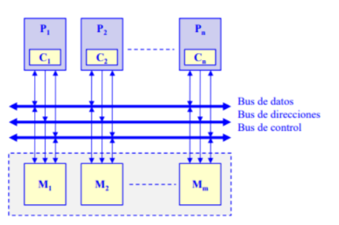
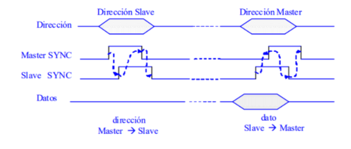
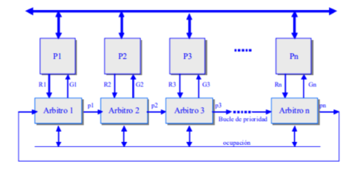
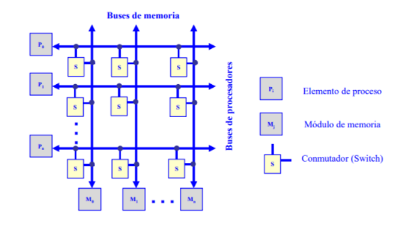
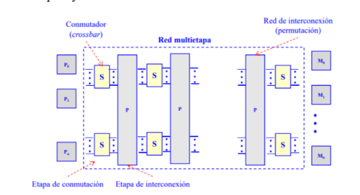

4.3 Sistemas de memoria compartida (multiprocesadores) Todos los procesadores acceden a una memoria común. La comunicación entre procesadores se hace a través de la memoria. Se necesitan primitivas de sincronismo para asegurar el intercambio de datos.
Multiprocesadores de memoria compartida. Estructura de los multiprocesadores de memoria compartida. La mayoría de los multiprocesadores comerciales son del tipo UMA (Uniform Memory Access): todos los procesadores tienen igual tiempo de acceso a la memoria compartida. En la arquitectura UMA los procesadores se conectan a la memoria a través de un bus, una red multietapa o un conmutador de barras cruzadas (red multietapa o un conmutador de barras cruzadas (crossbar crossbar) y disponen de su propia ) y disponen de su propia memoria caché. Los procesadores tipo NUMA (Non Uniform Memory Access) presentan tiempos de acceso a la memoria compartida que dependen de la ubicación del elemento de proceso y la memoria.
4.3.1 Redes de interconexión dinámica (indirecta). Medio compartido. Conexión por bus compartido. Es la organización más común en los computadores personales y servidores. El bus consta de líneas de dirección, datos y control para implementar: El protocolo de transferencias de datos con la memoria. El arbitraje del acceso al bus cuando más de un procesador compite por utilizarlo. Los procesadores utilizan cachés locales para: Reducir el tiempo medio de acceso a memoria, como en un monoprocesador. Disminuir la utilización del bus compartido. 
Multiprocesadores de memoria compartida: conexión por bus compartido. Protocolos de transferencia de ciclo partido. La operación de lectura se divide en dos transacciones no continuas de acceso al bus. La primera es de petición de lectura que realiza el máster (procesador) sobre el slave (memoria). Una vez realizada la petición el máster abandona el bus. Cuando el slave dispone del dato leído, inicia un ciclo de bus actuando como máster para enviar el dato al antiguo máster, que ahora actúa como slave. 
Protocolos de transferencia de ciclo partido. Protocolo de arbitraje distribuido La responsabilidad del arbitraje se distribuye por los diferentes procesadores conectados al bus. 
Protocolo de arbitraje distribuido. Arbitro-i concede el bus al procesador Pi activando Gi si: 1. Pi ha activado su línea de petición de bus Ri. 2. La línea de ocupación está desactivada. 3. La línea de entrada de prioridad pi-1 está activada. El árbitro i activa su línea de prioridad pi si: 1. Pi no ha activado su línea de petición Ri. 2. La línea de prioridad pi-1 está activa. 3. Finaliza una operación de acceso al bus. Conmutadas. Conexión por conmutadores crossbar. Cada procesador (Pi) y cada módulo de memoria (Mi) tienen su propio bus. Existe un conmutador (S) en los puntos de intersección que permite conectar un bus de memoria con un bus de procesador. Para evitar conflictos cuando más de un procesador pretende acceder al mismo módulo de memoria se establece un orden de prioridad. Se trata de una red sin bloqueo con una conectividad completa pero de alta complejidad. 
Multiprocesadores de memoria compartida: conexión por conmutadores crossbar. Conexión por red multietapa. Representan una alternativa intermedia de conexión entre el bus y el crossbar. Es de menor complejidad que el crossbar pero mayor que el bus simple. La conectividad es mayor que la del bus simple pero menor que la del crossbar. Se compone de varias etapas alternativas de conmutadores simples y redes de interconexión.
